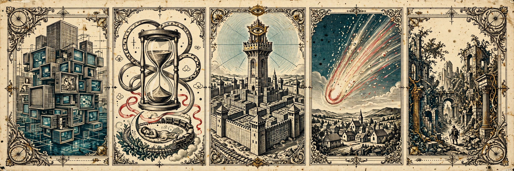

アトラスシリーズ ― 全6冊・全243作
アトラス大全
Atlas Complete Collection
物語は、世界への問いの立て方で分類できる。現実は本物か。時間は書き換えられるか。作られた知性に心はあるか。社会は人をどう管理するか。終わりはどう来て、その後には何が残るか――。 アトラスシリーズは、SF・映画・文学の名作を「型の分類」と「年表」の二層で読み解く系譜集です。このページは全6冊の玄関として、各アトラスへの入口をまとめました。

六つのアトラス
第一巻
仮想現実アトラス
この世界は本物か？ ― シミュレーションと仮想現実の系譜。胡蝶の夢から『マトリックス』以前の古典を掘り起こし、「現実の偽物」の作り方で作品を分類する、シリーズの原点。
第二巻
時空間アトラス
時間を移動し、繰り返し、書き換える物語の系譜。タイムトラベル、ループ、時間逆行、並行世界――「時間の操作」の型ごとに、ウェルズから現代までをたどる。
第三巻
管理社会アトラス
神の監視から哲人王、工場の管理、スコア社会まで――人間を管理する夢の系譜。社会がどう管理されているかで作品を読み、監視、快楽、情報統制、階級といった「管理の型」を、『われら』『1984年』から日本の作品までで描く。
第四巻
ポストアポカリプスアトラス
世界がどう終わり、何が残ったかで読む系譜。核、感染、環境崩壊――ロメロのゾンビ映画を幹に、荒野の暴力から「終わった後の穏やかな日常」までを収める。
第五巻
終焉アトラス
世界の終わる直前、カウントダウンを生きる物語の系譜。隕石ひとつ取っても、受容の『ディープ・インパクト』、迎撃の『アルマゲドン』、否認の『ドント・ルック・アップ』と三方向に割れる。
第六巻
人工知能アトラス
作られた知性に心はあるか。問われているのは、意識そのものだ。「何をもって意識があると判定するか」を軸に、チューリング・テストからフランケンシュタイン、ブレードランナー、herまでを読む系譜。仮想現実アトラスの「何で現実を判定するか」と対をなす。
横断索引
作品一覧
全6冊・全243作を、検索と共通のタグで横断する。同一作が複数のアトラスに載っている場合は、1枚にまとめて表示します。
横断する読み
判定
この世界は本物か、この心は本物か。六冊を貫く「判定」の糸をたどり、各巻の作品と作品一覧へ渡る読み物。
横断する読み
記憶
何が残り、何が思い出になるか。六冊を貫く「記憶」の糸をたどり、各巻の作品と作品一覧へ渡る読み物。
シリーズの読み方 ― 型 × 年表
どのアトラスも、同じ二層構造でできています。作品はまず「型」で分類され、同時に「年表」の上に置かれる。縦と横、どちらの向きからでも読めるのがこのシリーズの約束です。
第一層 ― 分類
型で切る
各アトラスは主題ごとに独自の軸を持ち、作品を「仕組みの型」で分類します。仮想現実なら現実の偽物の作り方、管理社会なら管理の手段、終焉なら何が来てどう迎えるか。同じ型に並ぶ作品同士を比べると、素材が同じでも作家ごとに何が違うかが見えてきます。
第二層 ― 系譜
年表でたどる
分類された作品は、発表年の順に年表へ並びます。原点の古典がどの作品に受け継がれ、どこで型が変形したか。系譜をたどれば、一見新しく見えるアイデアの祖先が、百年以上前の小説にいたりすることに気づけます。
本編と付録 ― 各冊は、系譜の幹をなす「本編」と、周辺・関連作を集めた「付録」で構成されます。気になる作品から拾い読みしても、年表の頭から通読しても大丈夫な作りです。まず1冊、興味のある主題からどうぞ。
六冊の関係 ― 危機の時間軸と、三つの問い
6冊のうち3冊は、「世界が危機に瀕してから終わるまで」の時間軸の上に並びます。残る3冊は、その全時代に差し込む根源的な問いです。
世界の危機の時間軸
破線の3冊は時間軸の外から全時代に関わります。管理社会にも、終末の直前にも、終わった後の世界にも、「現実の真偽」と「時間の操作」と「心の判定」の物語は現れます。